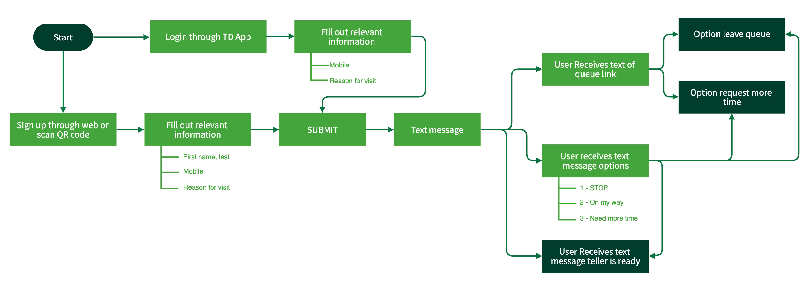

TD Mobile Check In — Redesign
TD Mobile Check In is a digital customer line-up system. This queue management platform enables employees to effectively serve personal and business clients.
My Role
User interview
Contextual Inquiry
Paper prototype
Ideation
High-fidelity protoype
Tools
Adobe XD
Illustrator
Adobe After Effects
Duration
2 weeks for redesign
Background
Amidst the COVID-19 outbreak, TD Canada Trust has taken the initiative to introduce a digital managing queue platform mid May of 2020. As many businesses and customers are scrambling to return to normal, the safety of staff and customers are in high priority. The digital queue requires no lineup, promoting strong social distancing measures and also provides opportunities for financial institutions to dip into new horizons with digital banking. Thus, the importance of screening customer needs prior to them entering the branch can prevent long lineups. This serves as an essential purpose in saving time and increasing overall productivity between customers and TD employees.
Why Redesign?
As a designer and a long-term employee/customer of TD Canada trust, I encountered frustrations when using the Mobile Check In system. So I challenged myself to redesign TD’s interface to optimize a two-sided business model within 2 weeks. Starting the journey with optimizing customer experience. View my redesign of LAVI — TD employee interface system.

Pain points
Visual coherence:
Navigation between screens, homepage, queue page, and text message links within the service lacks structure and consistency. Mass text clutters confuse users and inhibit user experience.
Lack of Accessibility:
Users are restricted to queuing into the system via QR code in branch.
Communication:
Inconsistent teller-client service due to delay in communication and text clutter. These delays incur longer wait times and productivity diminishes.
Research and Insight
Problems with the TD Mobile Check In service have been expressed by both TD clients and TD staff. I have completed over 20+ contextual inquiries whilst helping and observing clients operating the mobile service firsthand. I have also followed up with employees and clients with survey questionnaires.
“I make daily corporate cheque deposits and I waste time coming down and waiting in queue"
“Not a fan, it looks outdated and slow"
“My number in line says I'm 12th and then I'm ready to be helped... I don't have enough time to make my way over"
“It feels faster because I just grab a coffee and go through my emails"
“I went shopping today and my position in line was cancelled because I was 5 minutes late..."
Following these responses, I made these insights:
1. Customers get frustrated when they are asked to fill out the inputs to be added into the queue. The option such as “Tell us more” is redundant and should be a quick and easy screening process.
2. Text notifications were seen as clutter and spam with repetitive messages that displayed inconsistent queue times. This causes panic and urgency in clients
3. Customers new to the mobile check in service found it difficult or frstrating to use. However, regular clients and employees who regularly use the app compensated/adjusted to make the app useful to them.
4. Users found it confusing when they see their queue number displayed on the website and also received by text because the texts were more accurate compared to the “Live queue.”
5. Users find the navigation difficult as they didn’t know a requeue option was available. Meaning that many have lost their place in line because they were unaware that they could notify tellers that they were going to be late.
Who is the target user?
Business Clients:
Jim owns a small business and has been a long-term customer for 5 years. He is always running errands and gets frustrated when half his day is taken by waiting in line for long periods of time. He expects quick and efficient service, so he can return to his business.
Needs:
- quick and efficient service
- ability to line-up from work
 Personal Clients:
Personal Clients:
Mary is a regular client that makes biweekly bill payments in branch. The best part of her day is chatting away with her favorite tellers as her children are out of town. She doesn't have a mobile device and doesn't know much about technology. She doesn't like to wait in line as her knees are weak.
Needs:
- to be more technologically independent
- guidance to online banking
New Clients:
Jennie is an exchange student from Korea and cannot access the mobile app on her phone due to country origin of the device. She finds herself visiting the bank more often because she's not familiar with certain transfers and payments she has to make. Jennie gets frustrated when she needs to ask for help queuing into line.
Needs:
- easy navigation through services
- confidence with her banking
Ideation Process
GOALS:
Visual coherence:
Create a seamless, intuitive experience that is easy and natural for clients to navigate through.
Additional check-in options:
Allow personal and business customers to check-in when they need to. Also provide alternative options such as manual check-ins for clients without devices.
Facilitate communication:
Improve digital communication between tellers and clients. By reducing text clutter and providing proficient information.
How can I help improve the customer experience through an efficient queuing system?
From the contextual inquiries and questionnaires I have conducted, it has shown a pattern of clients being frustrated with the inconsistency of the queue system. It shows that a handful users were not able to navigate through the digital application without running into confusion and having to ask employees for guidance. This is shown as counterproductive as the check in for the mobile queuing system should be a “no brainer.” Another issue that I noticed were that the majority of clients who missed their spot in line were due to the fact that they were notified to come into the branch at the last minute.
I introduced a natural and easy navigation workflow where users are able to complete everything they need within one screen. The virtual queue can be accessed through several portals such as TD app, QR code and also online browsers, improving productivity between teller-client interactions. Text clutter has been reduced as it can be seen as “spam” because clients were receiving a fluctuant amount of texts. This was done by creating texts that hold sufficient information regarding the lineup without spamming clients.
I studied the design systems of a few queue operations that are offered for retail services while creating my solution. I decided to create a simple “no brainer” workflow to keep things natural and efficient inspired by the Take-A-Number system where the waiting room is a virtual one.
So, for my solution I have decided to section things that can be improved such as the visual design, user flow, and also revamping text messages whilst keeping brand identity in mind.

Design Process
Low-fidelity prototypes

Design and Prototyping
Main Page
An organized and natural "look and feel" navigation for required inputs essential for screening process to banking.
Queue
An effective display of user's queue in line, no longer having an outdated look. Brand identity was taken into consideration
to show TD colors, but also keeping it minimalist and less busy.
Text Notifications
Text messages have additional options and reminders for customers to return to the branch. Text clutter is reduced
to help ease users from feeling panicked and surprised.
High Fidelity Prototype
Web Browser User Flow

Mobile App User Flow

Key Takeaways
This 2 week project was extremely rewarding for me as a designer. This redesign aims to improve an essential tool used by clients and tellers in public sectors. It challenged me to set aside my own assumptions and frustrations with the system and proactively seek feedback. Here’s a few things I’ve learned over the short-term case study.
Don’t be afraid to create a product redesign — The best time to create a product redesign was yesterday. If you know what usability issues there are and feel that you can improve it, do it. The experience of doing a redesign has improved my user research and understanding of making sure that my design doesn’t just look “pretty” but serves a purpose to improve the lifestyle and wellbeing of others.
Empathize with users — This project forced me to improve my rendering skills, but more importantly it taught me about designing for the user. Having a deeper understanding of your users can enhance problem-solving approaches.
Importance of micro-interactions — I conducted 10 user interviews, but the most insight I received were from contextual inquiries. I was able to conduct over 20+ contextual inquiries followed up with questions for clients that helped me understand their frustrations and successes with the Mobile Check In system. The insight I received was translated to optimize the user experience for clients.
Create a deadline for redesigns — Creating a redesign can be tedious and make you feel burnt out at times. During the first few days of this case study, I was overwhelmed by the amount of work I had to put in and almost completely stopped. However, I created a schedule of what I could accomplish in a day without overloading my plate. I found that it made me efficient as I felt accomplished every step of the way.
Thank you for reading!
Check out my redesign of the Employee Mobile Check In System with LAVI